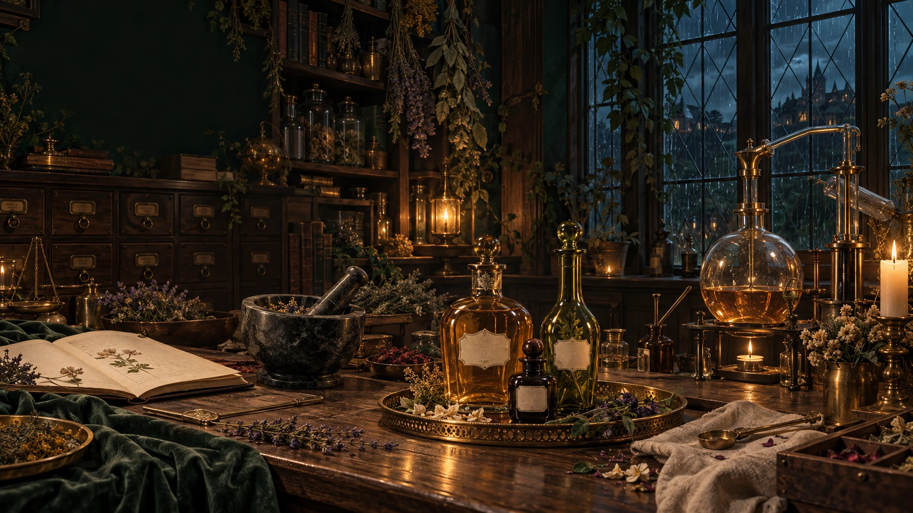

Still Room Manual
Treatment Guide
시술 안내 · 결을 손으로 푸는 법
01
The Knots
손으로 푸는 것마력을 쓰면 근육과 혈맥에 마력 찌꺼기가 뭉친 매듭이 생긴다. 치유 마법으로는 못 풀고, 손으로 짚어 풀 수 있는 시술사는 거의 없다. 사장은 그 드문 손을 가졌다.
- 01뻐근함
- 02통증
- 03감각 과민
- 04마력 출력 저하
02
Depth
결의 깊이층을 눌러 깊이를 비교해 보세요.
03
Warmth
달아오름- 평온
- 나른
- 열기
- 흐트러짐
- 한계
현재평온
04
Boundaries
허용선과 관계허용선
- 01옷 위
- 02맨등·어깨
- 03향유 전신
- 04민감부
- 05심결
관계
- 01낯섦
- 02안면
- 03신뢰
- 04각별
- 05연인
05
Perfumery
향유 선반레이나의 선반
병을 하나 골라 보세요.